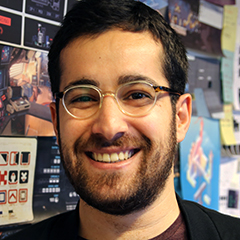
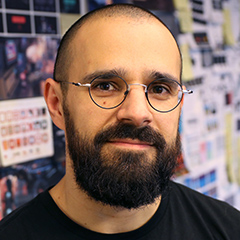
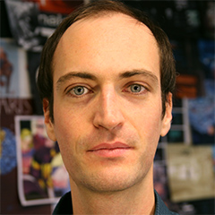
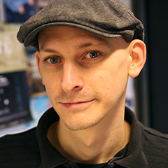
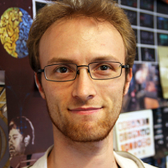

Where meets
Founded in June 2017 by Dr. Pedro Cardoso-Leite, xCIT is a research group where experts and students in science and design collaborate in a multidisciplinary endeavor to uncover the secrets of human learning and cognition in the digital age. We’re part of the University of Luxembourg and hosted in the Maison des Sciences Humaines of the shining new high-tech Campus Belval. We use state-of-the-art science and technology to create engaging digital experiences that are not only fun but also help us gather data to study and improve how human learns.
Learning is the Key
From education, to social interactions, our ability to learn and adapt to new environments is critical in most human endeavors and has repeatedly been acknowledged as an essential 21st century skill. There is a pressing need for better ways to assess and improve our cognitive abilities and learning efficacy.
But meeting such needs requires overcoming two main challenges:
Multiculturalism and interindividual differences: personalized training
To be effective, training must be adapted to learners’ skills, knowledge and motivation. Interactive digital media provide a means to assess individual differences and provide personalized content.
But how do we design personalized training algorithms that are efficient and effective?
Learning and Transfer: learning for impact
Learning in a specific situation does not typically generalize or transfer to situations that are related but slightly different. Yet, the goal of most learning is to be able to address a variety of situations and not only the specific training conditions.
But what are the principles and mechanisms that govern transfer of learning?
Our Approach to Research
Be Interdisciplinary
We collaborate with experts in machine learning, data science, psychology, cognitive neuroscience and education.
Embrace Complexity
We collect large data sets, from people facing a variety of cognitive tasks, questionnaires and video games.
Develop Applications
We create digital artifacts, in particular video games, to put our theories to the test and collect large data sets.
Iterate...
...Iterate...
...Iterate again
Our ultimate goal is to design scientifically validated interventions that have a significant positive impact on people’s lives.
Our Projects
Discover what we at xCIT have been busy doing
The Team
- 
- 
- 
- 
- 
Morteza studies neural basis of how we learn to learn with fMRI. He is currently focusing on behavioral neuroscience, but he has been a computer scientist most of his adult life. He likes surreal arts, people, Jazz, Dostoevsky, and Kurt Vonnegut. Morteza received M.Sc. in Cognitive Psychology from Institute for Cognitive Science Studies (Tehran, Iran). Prior to that, he studied B.Sc. in Computer Engineering and M.Sc. in AI, at Tehran Polytechnic and Shahid Beheshti University.
Morteza Ansarinia
Doctoral Researcher
Pedro studied psychology and cognitive sciences and holds a PhD in experimental psychology from Paris Descartes University. As a postdoc, he was trained in brain imaging at the Max Planck institute for Human Cognitive and Brain Sciences in Leipzig before working at the University of Geneva with Daphne Bavelier on the interactions between specific usages of digital technologies and cognitive abilities and on learning and transfer. You can find his list of publications on Google Scholar and most PDFs are on ResearchGate.
Pedro Cardoso-Leite
Principal Investigator, ass. Prof. & ATTRACT fellow
Fascinated by digital media at a young age, Brice completed a M.Sc. in Computer Science and Engineering (INSA Lyon) with the firm intention to create experiences that are meaningful and benefit society. His belief in a holistic and multidisciplinary approach to creativity led him to hone his crafts in various European start-ups and universities, producing a wide range of digital systems from tangible crisis management tools to alternate reality games. After teaching game development as an artistic practice to design students, he co-funded a game studio (Bunny & Gnome) and released an educational game about trash sorting which won four awards and was exhibited in a digital art museum (Trash Monsters).
Brice Clocher
game designer and developer
After graduating with honours from INSA Lyon — one of the best Science and Technology universities in Europe — Aurélien stepped up his game by working in several innovative and fast-growing tech startups in France. As a ludo-addict and experimentalist, he regularly participates in game jams and constantly designs and creates bite-sized video games, board games and web applications. He’s fascinated by Artificial Intelligence and developed artificial agents as well as two games specifically designed to be played by AI agents (for Cod’INSA, an AI contest). In 2013, he founded an independent game studio (Tabemasu Games) and released a fast-paced mobile game (Kawaii Killer).
Aurélien Defossez
game designer and developer
Making video games has always been Kamelia's dream. She completed a MSc in Computer Science at the Amirkabir University of Tehran, taught programming at her university and worked for several game studios as a game developer on award-winning video games (Rooster Wars). Along the way, she grew deeply interested in Cognitive Sciences, earning a Bachelors degree in Psychology, with a focus on using video games to improve people's lives. Now, as a member of the xCIT team, her goal is to design and develop video games to assess and improve learning, in particular among younger children.
Kamelia Jamaati
game designer and developer
Dominic studied mathematics and cognitive science at the University of Minnesota for a PhD in computational psychology. His research interests focus on using machine learning and cognitive modelling to understand human motivation, decision making, and learning. His dissertation work, advised by Paul Schrater, looks at how people allocate time and the metacognitive systems they use to solve this problem. Dominic wants to use data science and psychology to improve video games, and use games to improve psychology research.
Dominic Mussack
Postdoctoral Researcher and Data Scientist
After completing a Bachelor's Degree in physics, Emmanuel decided to embrace his deep-rooted passion for videogames and went on to study game design at Gamagora (Université Lyon 2), followed up by a Master's Degree in video game development. During this time he led several student projects (among which ReScale), regularly participated in game jams and developed an interest for interdisciplinary research around video games. Emmanuel now aims to participate in the creation of meaningful and innovative user experiences, while improving his knowledge of the medium.
Emmanuel Schmück
Doctoral Researcher
- International Collaborators
- Former Members
Dr. Joaquin A. Anguera
University of California, San Francisco, USADr. Simon Barthelme
CNRS & Institut Polytechnique de Grenoble, FranceProf. Daphne Bavelier
University of Geneva, SwitzerlandProf. Michel Fayol
Blaise-Pascal University, France
Dr. Shawn C. Green
University of Wisconsin-Madison, USAProf. Robert Goldstone
Indiana University, Bloomington, USADr. Joeran Lepsien
Max Planck Institute for Human Cognitive and Brain Sciences, Leipzig, GermanyYann Micheli
CEO of Puls@care
Dr. Swann Pichon
University of Geneva, SwitzerlandProf. Russell Poldrack
Stanford University, USAProf. Paul Schrater
University of Minnesota, USADr. Florian Waszak
Université Paris Descartes & CNRS, France
Baptiste Bourgoin
Game Designer and DeveloperSébastien Gaumin
Game Designer and Developer
Maël Lacour
Game Designer and DeveloperMaxime Magnin
Graphic and Animation ArtistJosselin Morau
Fullstack Web Developer
Vincent Pettineo
Game Designer and DeveloperJan Morgenstern
Music and Sound Artist
Join us!
Our team is growing, with the recent arrival of new Ph.D.s, post-docs and interns in science, design and arts.
Curious about joining us? See for yourself what we do and how we do it!
We are always happy to hear from people interested in joining or collaborating with us! Although we don't have explicit openings as of now, we always offer opportunities for internships in data science (analysis of large scale behavioral data, computational modeling), game design and development, computer engineering (web apps), and digital arts for video games (graphics, animations, sound).
Feel free to get in touch with us at contact@xcit.org to find out more.
xCIT is supported by the Luxembourg National Research Fund
(ATTRACT/2016/ID/11242114/DIGILEARN)